QACT Lite : Testing the Audio Module on Target
Overview
QACT (Qualcomm Audio Calibration Tool) Lite is a PC based tool that lets you modify the ACDB (Audio Calibration Database). ACDB is a set of binary files containing calibration data for all devices, networks and sample rates. The default set of acdb files can be found in the folder “/etc” on your target device.
To enable a custom audio module on target the module must be added to a new topology definition. These are the steps from a high level:
-
Pull out the acdb files from the target. (You may use the files already provided with the release as well)
-
Create the workspace file for the acdb files and launch acdb in QACT Lite.
-
Add information regarding the new topology and associated modules.
-
Add the appi_fir.so to AMDB using DSP Module manager functionality in QACT Lite
-
Push the modified acdb back to the target and reboot.
-
Configure the custom module parameters in real time using the 'DSP Calibration' feature of QACT Lite.
Prerequisites
-
Android Device
-
QACT Lite and QPST installed on system.
Please ../Support_Contact Qualcomm to obtain them. The User Guide shipped along with QACT will take you through the installation. You can refer section 2 of the document for more details
-
ADB drivers installed on system.
Setting up the workspace
-
Pull the existing acdb files from the target device. (Assuming 'C:\Work\ACDB' is the working directory)
adb pull /etc/Speaker_cal.acdb C:\Work\ACDB adb pull /etc/Headset_cal.acdb C:\Work\ACDB adb pull /etc/Handset_cal.acdb C:\Work\ACDB adb pull /etc/Hdmi_cal.acdb C:\Work\ACDB adb pull /etc/Global_cal.acdb C:\Work\ACDB adb pull /etc/General_cal.acdb C:\Work\ACDB adb pull /etc/Bluetooth_cal.acdb C:\Work\ACDB
Note : The acdb files can be present in /etc/ or /etc/acdbdata/MTP folder depending on the released image you are working on.
-
Create a workspace file 'workspaceFile.qwsp' in the same folder. You can modify the existing qwsp file, if you are provided with one.
If creating new, a text file with contents as shown should suffice
<WorkSpace_Data WSVersID="Badger_3">
<ACDBFile_Paths>
<ACDBFile_Paths path="Bluetooth_cal.acdb" /> <ACDBFile_Paths path="General_cal.acdb" /> <ACDBFile_Paths path="Global_cal.acdb" /> <ACDBFile_Paths path="Handset_cal.acdb" /> <ACDBFile_Paths path="Hdmi_cal.acdb" /> <ACDBFile_Paths path="Headset_cal.acdb" /> <ACDBFile_Paths path="Speaker_cal.acdb" />
</ACDBFile_Paths> <GUI_Data> </GUI_Data>
</WorkSpace_Data>
NOTE : If the file are pulled from /etc/acdbdata/MTP, then they have to be renamed to MTP_***_cal.acdb
<WorkSpace_Data WSVersID="Badger_3">
<ACDBFile_Paths>
<ACDBFile_Paths path="MTP_Bluetooth_cal.acdb" /> <ACDBFile_Paths path="MTP_General_cal.acdb" /> <ACDBFile_Paths path="MTP_Global_cal.acdb" /> <ACDBFile_Paths path="MTP_Handset_cal.acdb" /> <ACDBFile_Paths path="MTP_Hdmi_cal.acdb" /> <ACDBFile_Paths path="MTP_Headset_cal.acdb" /> <ACDBFile_Paths path="MTP_Speaker_cal.acdb" />
</ACDBFile_Paths> <GUI_Data> </GUI_Data>
</WorkSpace_Data>
-
Another method to extract the acdb files is by connecting to a target from QACT Lite where a new image has been flashed and saving the files from QACT.
This will save the acdb files and workspace file automatically. Use “Connect to target” option in QACT Lite.
-
Launch QACT Lite. Choose 'Open File' icon as shown.
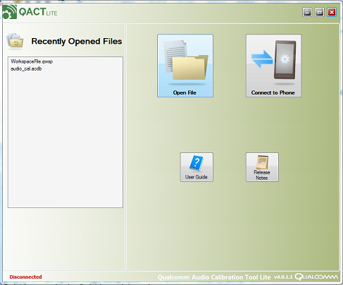 Browse to the location C:\Work\ACDB and choose the file workspaceFile.qwsp.
Now we are ready to modify the acdb for the custom requirement.
-
Modify the ACDB
Assume we have created an audio module named appi_fir.so. We would like to have this module present in the COPP RX path while playing out audio through the speaker. In order to achieve this, we need to create a topology with the FIR module in it. Now, set this new topology to be chosen for the audio playback session through the speaker.
-
Start with adding parameter IDs for the FIR module. Choose “Parameter Designer” from the 'Tools' menu as shown
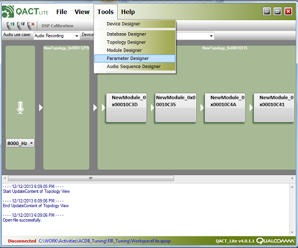 Now, you can fill up the information regarding the parameters for FIR module. Use the file “<SDK_Location>examples\audio\appi_fir\inc\appi_fir.h” as the reference for filling up the info here.
In the parameter designer window, click “Add” as shown
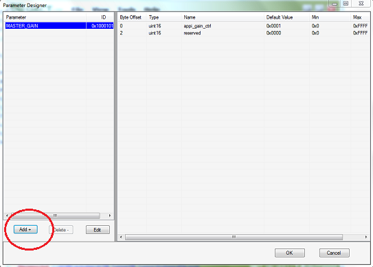 A new window will pop up, where you can provide the parameter info as shown. Parameter name is an identifier. The ID should match the value present in 'appi_fir.h'
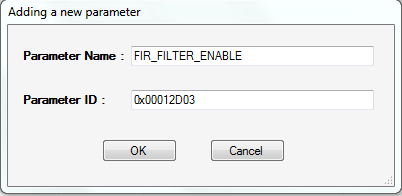 You can add the relevant data for the parameter 'FIR_FILTER_ENABLE'. ( refer structure 'fir_filter_enable_cfg_t' from the file 'appi_fir.h'). Click on 'Add' as shown. Fill up the info in the popped up window. Once done with adding all data, click “Done”.
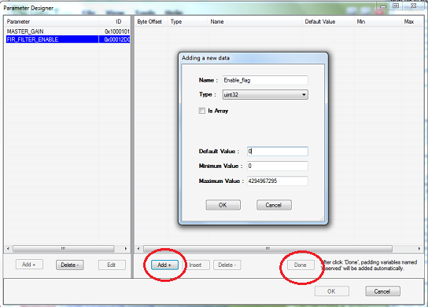 Again, continue the same procedure for adding the parameter FIR_FILTER_PARAMS. (shown below).
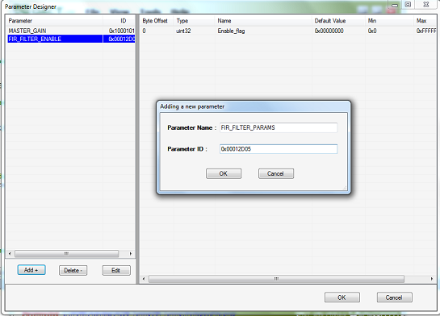 Adding data related to the FIR_FILTER_PARAMS (refer the structure 'fir_filter_cfg_params_t')
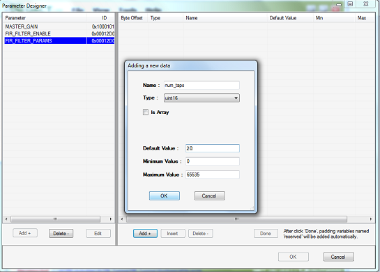 Adding the reserved variable.
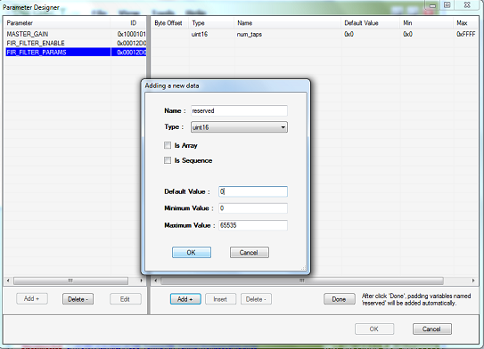 Now, we need to add the filter coefficient array as shown.
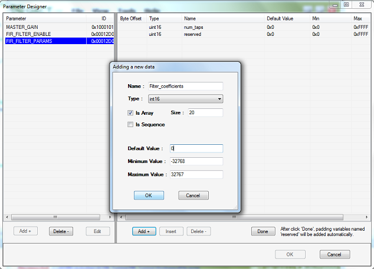 After clicking “done”, the parameter designer window will look like this
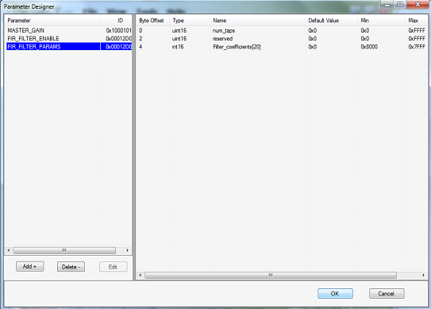 -
Now that we have added parameters for the FIR module, it's time to add the module details and map these parameters to the module.
Choose 'Module Designer' from the 'Tools' Menu.
In the module designer window, click on 'Add'.
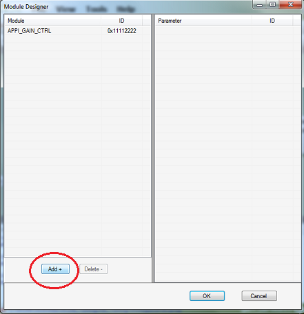 Provide the module name and Module ID. Choose the Module Type. (RX, TX or Both).You can provide a Module ID of your choice. But, make sure that the same ID is used while adding the module using DSP module manager in QACT.
Choose the applicable parameters for the modules as shown below.
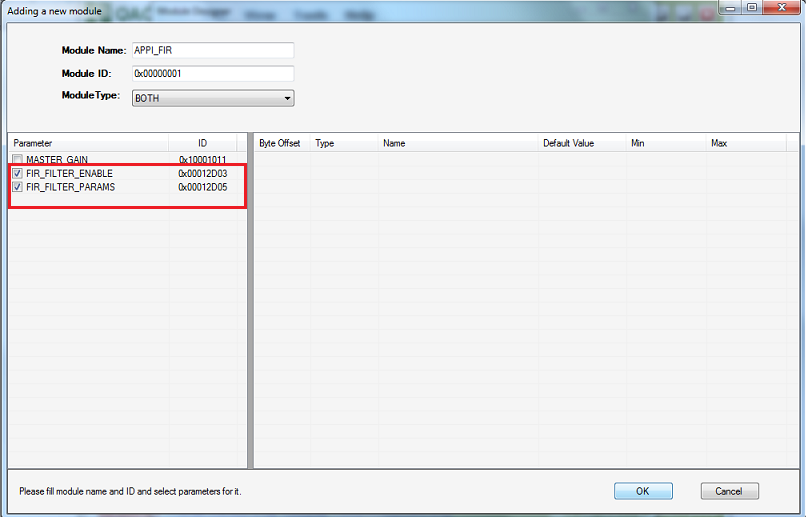 Once done with module addition, the module designer will have the FIR module listed as shown
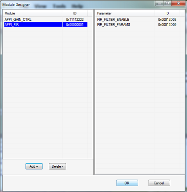 -
It's time to design a new topology with the newly added FIR module in it. Choose 'Topology Designer' from the 'Tools' Menu and proceed as shown.
Fill the information regarding Topology Name, Topology ID, and Topology Type. Topology ID can be any value of your choice, but greater than 0x10000000
Now choose the module 'APPI_FIR' to be part of this topology.
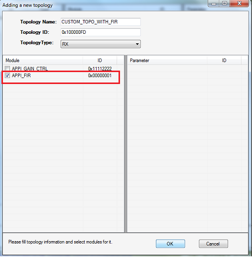 After the design of new topology, the topology designer window may look like this.
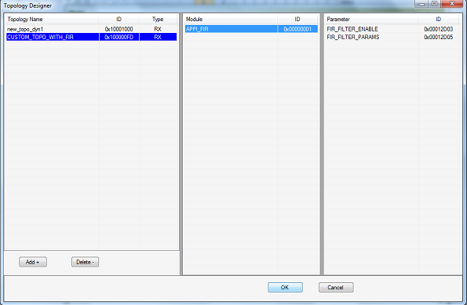 -
Add the newly designed topology in the Database designer. Choose 'Database Designer' from the 'Tools' Menu.
Choose AUDIO_COPP_RX from the left side of the window. Now click 'Add' as shown
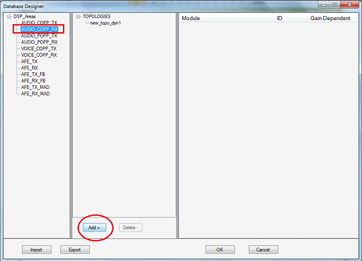 Check box corresponding to the newly created topology 'CUSTOM_TOPO_WITH_FIR'.
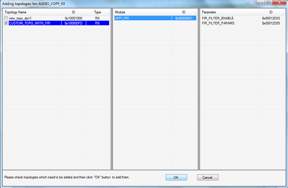 -
Add the module information in DSP module manager. This is a new feature in QACT to allow addition of dynamic modules to AMDB(Audio Module Database).
It allows addition of CAPIv2, CAPI as well as APPI modules to AMDB.
Select “DSP Module Manager” from the “Tools” menu.
Click on “Add Module” button.
Select the options for appi_fir module as shown in the image below.
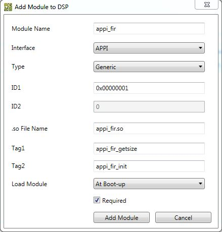 -
Choose the device to run the new topology.
In the 'Tools' menu select 'Device Designer'.
Select the appropriate device (SPKR_PHONE_SPKR_STEREO, SPKR_PHONE_SPKR_MONO, HEADSET_SPKR_MONO,HEADSET_SPKR_STEREO) from the left side of the window. Now, on the right side, for the Audio COPP Topology ID, choose the topology CUSTOM_TOPO_WITH_FIR from the dropdown menu.
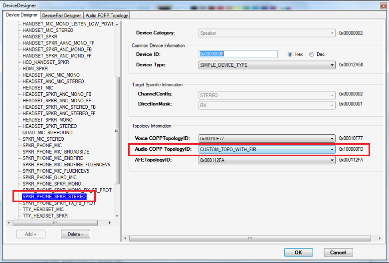 -
Time to save the modified ACDB.
Choose “Save As” from “File” menu.
A window will pop up where you can browse to the folder to save all the acdb files and workspace file. For the worksapce file, browse to your desired location. The same location will be picked up for all other files.
Assuming you have saved all the files in C:\WORK\ACDB\FIR_ADDED
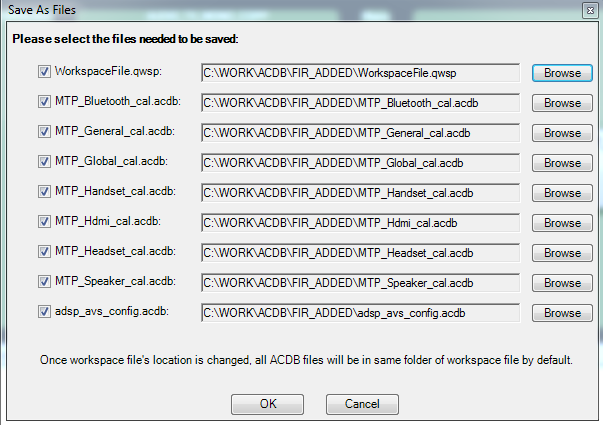
Replacing the ACDB on the Target Device
Now that we are done with modifying the ACDB, it's time to push the files to Target. Assuming the saved acdb files are kept at C:\WORK\ACDB\FIR_ADDED. Issue the following commands in a CLI shell.
adb push Speaker_cal.acdb /etc/acdbdata/MTP adb push Headset_cal.acdb /etc/acdbdata/MTP adb push Handset_cal.acdb /etc/acdbdata/MTP adb push Hdmi_cal.acdb /etc/acdbdata/MTP adb push Global_cal.acdb /etc/acdbdata/MTP adb push General_cal.acdb /etc/acdbdata/MTP adb push Bluetooth_cal.acdb /etc/acdbdata/MTP
To push the acdb file that is read by DSP to add dynamic module to AMDB, execute the following command
adb push adsp_avs_config.acdb /etc/acdbdata/
Reboot the device.
Adding audio module to target
This section covers information about adding a dynamic audio module to target.
NOTE: After loading the new ACDB with custom topology, dynamic module needs to be loaded after boot up. However, for an audio session when a topology gets created, dynamic module will not be present, unless specified in acdb files If the module is not added to AMDB via acdb files, the topology creation exits mentioning absence of module in AMDB. Once the module is added to AMDB(either at bootup or when the use case is invoked, topology creation will be successful and playback/record session will work as expected. This can be followed by calibration of the custom dynamic module.
There is an automated script in SDK ( push_audio_module.cmd) which will compile respective example and push it to target. It will take care of updating the other dependencies for testing like testsig generation, pushing testsig to target etc. This script can be found at <SDK_ROOT>\scripts\push_audio_module.cmd
Usage of this script to push appi_fir example, testsig.so, skel.so
run setup_sdk_env.cmd cd scripts push_audio_module.cmd appi_fir
Signing of device : generation of testsig.so
-
Find out the serial number of device
Open a CLI shell and push *getserial* application from <HEXAGON_SDK_ROOT>tools\elfsigner to target
adb push <HEXAGON_SDK_ROOT>tools\elfsigner\getserial /data
-
Connect the device and log into adb shell as root user.
adb root adb shell cd data chmod 777 getserial ./getserial
This will show the serial number of device If getserial application fails to run, then execute the following command and then try running getserial again
insmod /system/lib/modules/adsprpc.ko
-
Create testsig.so from elfsigner.py at <HEXAGON_SDK_ROOT>tools\elfsigner
NOTE : Run setup_sdk_env.cmd(present at <HEXAGON_SDK_ROOT> location) before running elfsigner.py
elfsigner.py -t <SERIALNUM>
This will generate testsig-0x****.so.
-
Rename the so to testsig.so and copy to device under /system/lib/rfsa/adsp/
Note: If this directory doesn't exist, create this directory in /system/lib/rfsa/adsp/ folder on target and then push testsig.so on target
adb shell mkdir /system/lib/rfsa/adsp/
After this step, reboot the device.
For more information about Elfsigner, please refer Signing
There is an automated script present in Hexagon SDK to flash testsig.so to target. Run the following script
<SDK_ROOT>\tools\scripts\testsig.cmd
DSP Calibration in Real Time using QACT
QACT Lite provides a GUI based calibration for audio modules.
-
Launch QPST
-
Launch QACT and choose “Connect to Phone” icon.
If you encounter a message as shown below, click 'Yes' and browse to the ACDB location we have created in previous steps (Eg: C:\WORK\ACDB\FIR_ADDED ). Choose the workspace file.
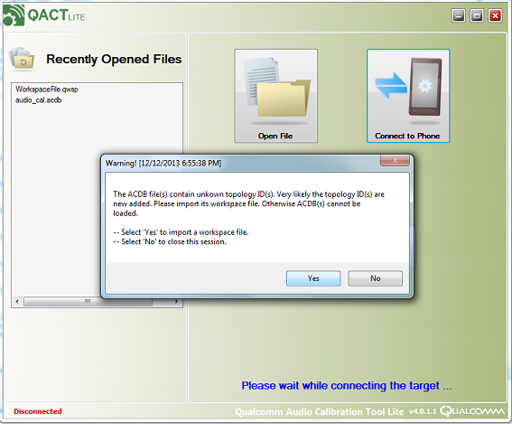 Click on 'DSP Calibration' as shown below. Start playing audio from the native player in Android. You will see the COPP topology with APPI_FIR in it.
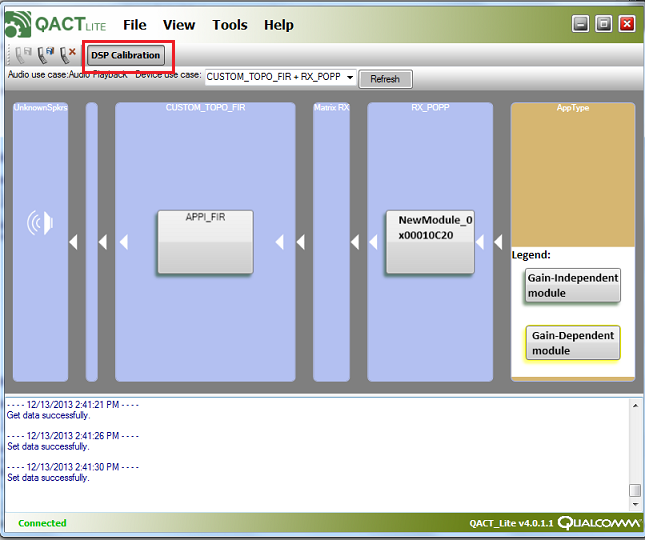 Double click on the APPI_FIR box and you will see the calibration window for the module.
Now you may set the various parameters for the module, in real time. Set the enable flag to 0x1, and provide a set of filter coefficients.
For eg: HP100 = {0xFFF4,0xFFE9,0xFFCE,0xFFA8,0xFF82,0xFF66,0x3F5B,0xFF66,0xFF82,0xFFA8,0xFFCE,0xFFE9,0xFFF4}
After configuring the values, click on “Set to DSP” and you can feel the effect of filter in the live audio.
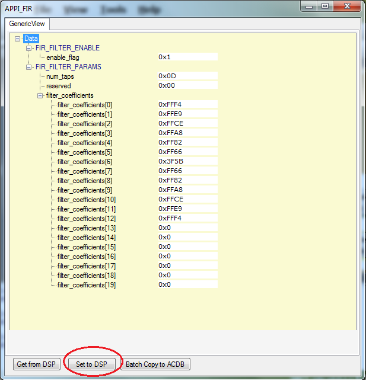 The Option “Get from DSP” can be used to retrieve the existing parameter values from the DSP.
Compiling the H2XML annotations to generate XML file(s)
-
Use the following command to generate the XML file from annotated header file.
$ ./<h2xml binary path>/h2xml.exe -conf <config file path>/config_adsp.xml -i <input file> -o <output directory>
Copyright © 2018 Qualcomm Technologies Inc. All rights reserved.